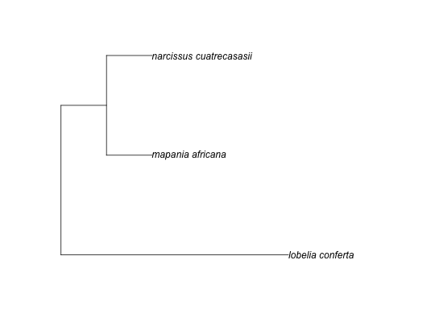

phylomatic
ph_phylomatic(taxa, phylo, tabular = FALSE, lowercase = FALSE, nodes = FALSE)
phylo object, a newick
string (both will be written to a temp file if provided) - OR a path to a
file with the newick string. Required.FALSEFALSEFALSEThe taxa character vector must have each element of the
form family/genus/genus_epithet. If a file is passed in, each
line should have a family/genus/genus_epithet string - make sure
only one per line, and a newline (i.e., press ENTER) at the end of
each line
library(phytools) taxa_file <- system.file("examples/taxa", package = "phylocomr") phylo_file <- system.file("examples/phylo", package = "phylocomr") # from strings (taxa_str <- readLines(taxa_file))#> [1] "campanulaceae/lobelia/lobelia_conferta" #> [2] "cyperaceae/mapania/mapania_africana" #> [3] "amaryllidaceae/narcissus/narcissus_cuatrecasasii"(phylo_str <- readLines(phylo_file))#> [1] "(((((eliea_articulata,homalanthus_populneus)malpighiales,rosa_willmottiae),((macrocentrum_neblinae,qualea_clavata),hibiscus_pohlii)malvids),(((lobelia_conferta,((millotia_depauperata,(layia_chrysanthemoides,layia_pentachaeta)layia),senecio_flanaganii)asteraceae)asterales,schwenkia_americana),tapinanthus_buntingii)),(narcissus_cuatrecasasii,mapania_africana))poales_to_asterales;"(tree <- ph_phylomatic(taxa = taxa_str, phylo = phylo_str))#> [1] "(lobelia_conferta:5.000000,(mapania_africana:1.000000,narcissus_cuatrecasasii:1.000000):1.000000)poales_to_asterales;\n" #> attr(,"taxa_file") #> [1] "/var/folders/gs/4khph0xs0436gmd2gdnwsg080000gn/T//RtmpBFZlyP/taxa_7c5315acb263" #> attr(,"phylo_file") #> [1] "/var/folders/gs/4khph0xs0436gmd2gdnwsg080000gn/T//RtmpBFZlyP/phylo_7c537cf38cb2"# from files taxa_file2 <- tempfile() cat(taxa_str, file = taxa_file2, sep = '\n') phylo_file2 <- tempfile() cat(phylo_str, file = phylo_file2, sep = '\n') (tree <- ph_phylomatic(taxa = taxa_file2, phylo = phylo_file2))#> [1] "(lobelia_conferta:5.000000,(mapania_africana:1.000000,narcissus_cuatrecasasii:1.000000):1.000000)poales_to_asterales;\n" #> attr(,"taxa_file") #> [1] "/var/folders/gs/4khph0xs0436gmd2gdnwsg080000gn/T//RtmpBFZlyP/file7c53599a3a34" #> attr(,"phylo_file") #> [1] "/var/folders/gs/4khph0xs0436gmd2gdnwsg080000gn/T//RtmpBFZlyP/file7c531c6359e1"library(ape) plot(read.newick(text = tree))